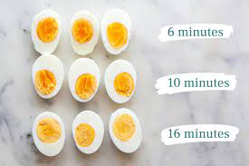

Boiled eggs

A serving of boiled eggs, with respective boiling times
Ingredients:
- Put eggs in 500mL of water and let it boil
- Depending on desired hardness of your eggs, boil for a set amount of time (image above
- Take out the eggs from the water after boiling, let them cool
- Remove the shells
- Enjoy with mayo!